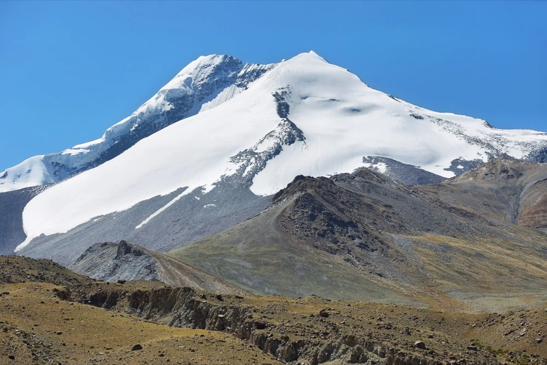
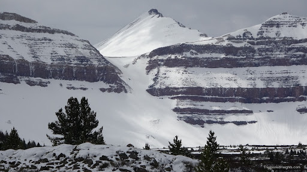
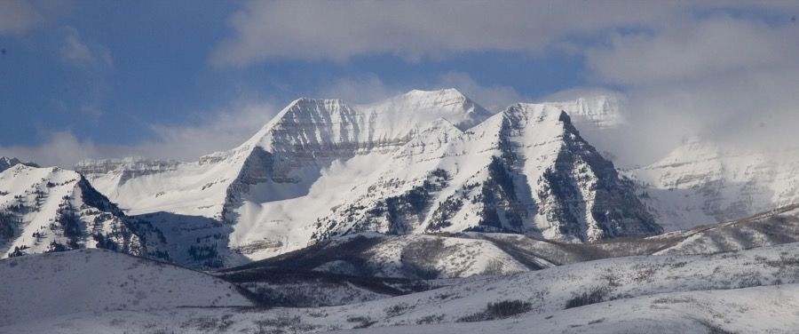
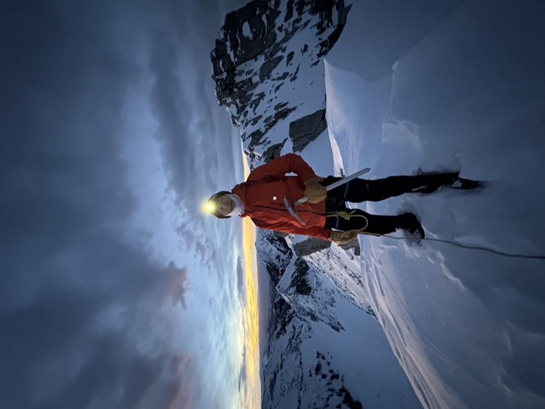
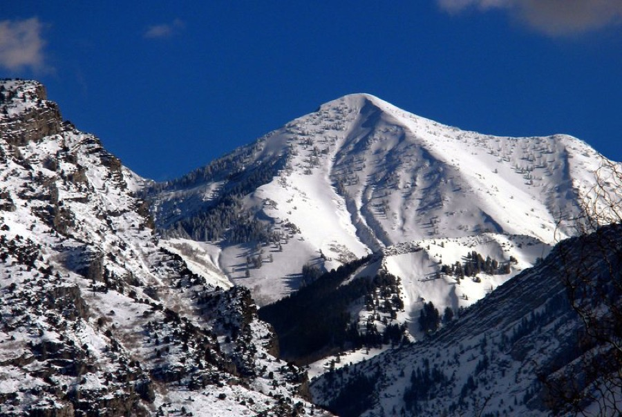
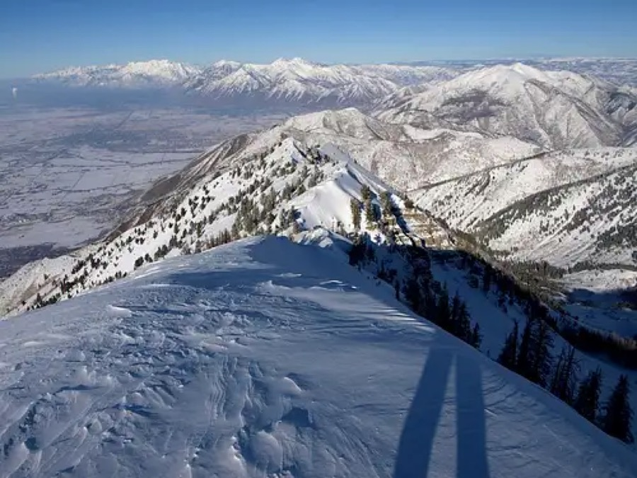
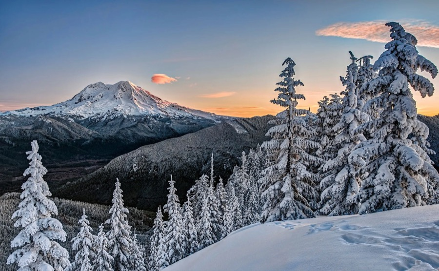
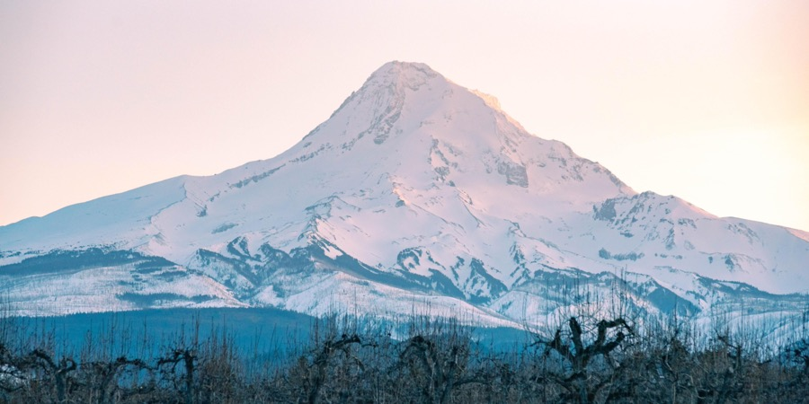
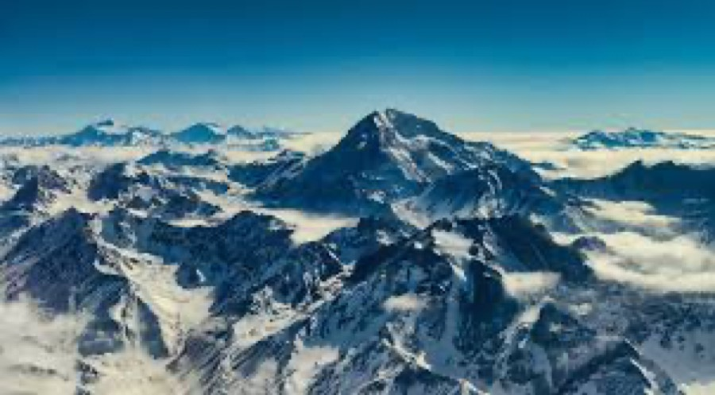

05 — Mountains by the Numbers
World's Highest Peaks
An interactive look at the world's major summits — elevation, location, and first-ascent data. Explore the data by hovering over peaks or filtering by region.

Passion Project — Mountaineering
"This year I organized an expedition to summit Kang Yatse 2 at 20,505 ft in the Indian Himalayas — in business and in the mountains, I thrive where grit and disciplined execution matter most."
00 — About the Climber
I've been drawn to big objectives since I was a kid. What started as day hikes in the Wasatch Range has grown into multi-day expeditions, technical snow routes, and high-altitude mountaineering in the Himalayas. Every summit is a different puzzle — route-finding, weather windows, physical limits — and I'm hooked on solving it.
Utah gave me the foundation: Timpanogos, Lone Peak, Kings Peak. India gave me perspective. I'm working toward the Seven Summits and have no plans to stop.
01 — Peaks Climbed






02 — On the Trail
A look at what it takes to summit a 6,000-meter peak in the Indian Himalayas — the approach, the altitude, and the final push to the top.
03 — What's Next
May 2026

May 2026

January 2027

04 — Test Your Knowledge
Think you know these mountains? Identify each one from the photo.
05 — Mountains by the Numbers
An interactive look at the world's major summits — elevation, location, and first-ascent data. Explore the data by hovering over peaks or filtering by region.